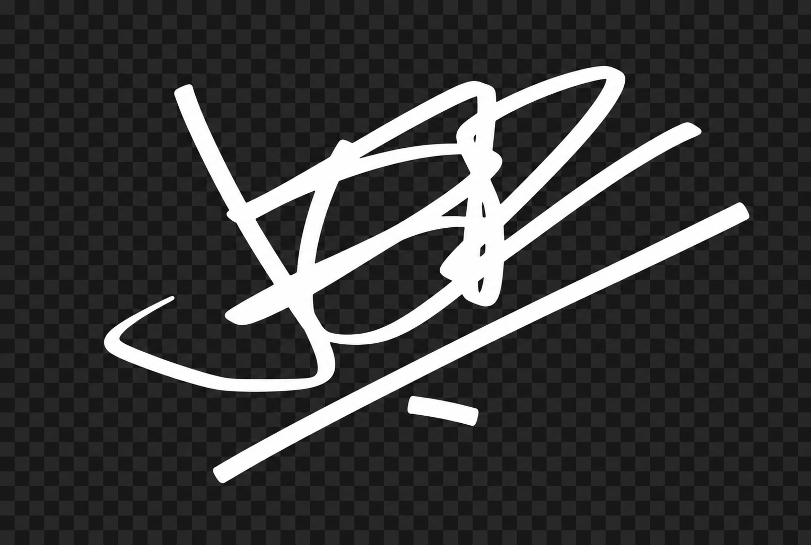

fw/r
Robotics, LiDAR, and AI for rooms where the answers actually have to work.
The work, the rooms, the machines, the coffee, the objects, and the Pacific Northwest weather that keeps having opinions.
In lieu of a press release. Read at your own pace.
AI systems, coffee spaces, product design, coastal hospitality, and a very specific tolerance for useful, unhurried things.
Robotics, LiDAR, and AI for rooms where the answers actually have to work.
The coffee shop. Five locations into the saga. Antique brass floor sinks have entered the chat.
Product design for physical goods with real materials, real weight, and reasons for every millimeter.
pine's coastal little sister. Slower, saltier, and not interested in being found too easily.
SoCal origin story. PNW weather. Strong opinions. Somehow also toasters.
I'm a SoCal kid. Born there, raised there, shaped by it in ways my therapist and I are still mapping out. Never "cali" - that word's for people who saw the place in a movie. Packed it all up in March of 2020 and traded the freeways for fir trees. Now I live in the PNW, where the weather has opinions, the trees are old enough to know better, and the silence is loud enough that you can actually hear yourself think - which is the best part.
Four ventures now, all running out of the same desk in downtown Vancouver. Not Canada, the other one. The block has range: an overpriced pizza shop named after the almighty hairy creature of the woods on one side, the witch shop on the other - where, for the record, I once overheard a lady asking, very seriously, for a potion to help her get laid. True Story. Nothing against witches, by the way. Know a few. Haven't met a bad one yet.
fw/r is Robotics, LiDAR and AI - the team I take into rooms where the questions are real and the answers actually have to work. Boutique by design, not by accident. We don't pitch, we don't deck, we don't do the dance. We get called when somebody's tried the obvious and the obvious didn't hold. Government, enterprise, the occasional founder showing up with a real problem and the patience to let us solve it properly. The work that doesn't make the press release. The work the press release wouldn't exist without.
pine is the coffee shop, and listen, she's moved four times in four years and still hasn't technically opened. She's a money pit with a personality and a delta that still needs to be paid. We're on location five now, and I just sourced a set of antique brass floor sinks, which any coffee person will tell you means it's finally happening, maybe. Or that I've lost it. Both could be true.
nrthrn is the product design studio - consumer goods for the people who'll use them, industrial goods for the companies that make them, the kind of work where every millimeter has a reason and every reason has a story. Real materials, real weight, things that earn their place on a counter or a shelf. The opposite of whatever a focus group recently rubber-stamped. Slower to make. Better to live with. Super obsessed with toasters right now. Don't ask. Okay, fine - if you must know, the answer is still no.
drift is pine's little sister, hiding out on the coast in a town I'm not naming yet. She's still picking her block. Smaller, slower, more salt in the air. The kind of place you don't find unless you're already looking, and even then, only if you're paying attention. She'll open when the tide tells her to, and not a minute before. No grand opening. No press. No marketing budget to speak of. The plan is no plan. The plan is patience.
Four bat-shit ideas, one guy stupid enough to run all of them.
Mornings are Blue Bottle, or that Sun-Dried Ethiopia Highlands from the big chain rooted just north of me. Black Rock if I feel like venturing east. Caspian currently runs most of the evenings. Russian Circles when it's cold and gray. Cult of Luna when it's worse than that. Ethel Cain when the drive's long enough to be honest with myself. Taylor Swift when none of the above is up to the task - and yes, you read that correctly. SoCal taught me how to walk into a room. The PNW taught me when to stay quiet in it. Both showed up in the work eventually.
April 2027, I'm walking from Campo, California to Manning Park, British Columbia. 2,650-ish miles, on foot, by choice - apparently. PCT, northbound, solo, with a drone for the pretty parts and an iPhone for the parts I'll regret later. Filming a wannabe YouTube documentary along the way, because of course I am. I know the trail won't be what I'm picturing. That's the entire point. Whatever I think it's going to be, it'll be harder, weirder, longer, and more interesting than that.
The version of me that finishes in Manning Park isn't the version that starts in Campo, and frankly, I'm rooting for the new guy. I'm not going looking for myself - I've met that guy, and contrary to what you may have heard he's doing just fine. I'm going because five months on foot has a way of clearing out everything that wasn't actually mine to begin with, and I want to see what's left when I get there. Who or what's still standing. That's where the honest parts - and the honest people - show up. It's not a test for me. It's a test for everything and everyone else.
I read more than I post about it. I write more than I publish. I code more than I hit commit. There's a vinyl bookcase in my house - full of vinyl, of course - a working theory that taste is a discipline you practice not a vibe you wear, and a frankly indefensible amount of opinions about typography. People who treat aesthetic like decoration give themselves away in the first ten seconds. The way a thing looks is the way it thinks. If your work is loud, your thinking is loud. I try to keep mine quiet - partly out of principle, partly because the room is usually full of people doing the opposite, and somebody's gotta balance the levels.
What I make tends to come out useful and unhurried. The speed of a beam of light returning with the exact measurement. A coffee shop where someone - finally, mercifully - chose the chairs on purpose. A quiet thing in a noisy room. A piece of hardware you didn't know you needed until you held it, and then can't put down. I'm not interested in being everywhere. I'm interested in being good, in the spots I actually show up. And I will show up. I'll just be across the street, seeing if you did.
Opinions below. Skip if you bruise easy. "North star" and "roadmap" are the two worst fucking ways to describe anything anyone is actually building, and I will die on this hill, in monospace. Nobody who has ever said "let's take this offline" has ever taken anything offline. They just didn't want to lose the argument in front of people. "Move fast and break things" was always a stupid motto, but at least it was honest — now the motto is "move slowly, break nothing, and call it a sprint." Most product managers are translators who don't speak either language. I say that with love and also accuracy.
The fucking obsession with metrics has turned every creative decision into a math problem solved by people who were bad at math. "Data-driven" is just "I don't trust my own judgment" in a Patagonia vest. AI is extraordinary. AI discourse is insufferable. Somewhere between "it's going to kill us all" and "it's just autocomplete" is the truth, and nobody wants to live there because it's boring and correct. The web used to have soul. Geocities had more personality than 90% of the Y Combinator portfolio. That's not nostalgia — that's a fucking measurement.
The best work happens when somebody says "I don't know" out loud and means it. The worst work happens right after someone says "I have a framework for that." Every "culture deck" is a suicide note written by the culture it killed. I'm not smarter than anybody else. I just refuse to pretend the emperor's clothes are fire when the man is clearly standing there in his underwear.
I'm not chasing scale. I'm chasing a body of work. The kind you can point at when somebody asks what you did with the time. Most of what I want to do - what I've always wanted to do - is help other people ship the thing they've been circling for months. The product that's almost there. The system that works on paper but won't behave in the field. The idea that's good enough to deserve better than where it's stuck.
I show up with light that runs out ahead and tells you what's there. Robots that do the work people shouldn't have to. Language tuned tight enough to make a frontier model do exactly what you meant. Models that read the room before the room knows it's being read. Coffee made slowly, on purpose, in a place where someone actually chose the chairs. Some of it is mine - fw/r, pine, nrthrn, drift, the trail, the toaster. Most of it isn't. Most of it was never supposed to be. That's the job. I don't need a reason. I just know I'm not done.
Don't let the wheels fall off.

(Ethel Cain's "American Teenager" plays. Fade to black.)
Of course I had to end this dramatically. If you rolled your eyes and laughed, it worked. If you rolled your eyes and said something negative, it still worked.
Then we probably have enough overlap to talk about systems, spaces, machines, coffee, product work, or the useful thing you are trying to ship.